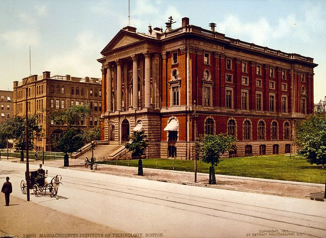

"Massachusetts Institute of Technology (MIT) is a private land-grant research university in Cambridge, Massachusetts.
Established in 1861, MIT has since played a key role in the development of modern technology and science and has been ranked among the top academic institutions in the world"
Thi is Rogers Building at MIT in 1901.
Source:Wikipedia